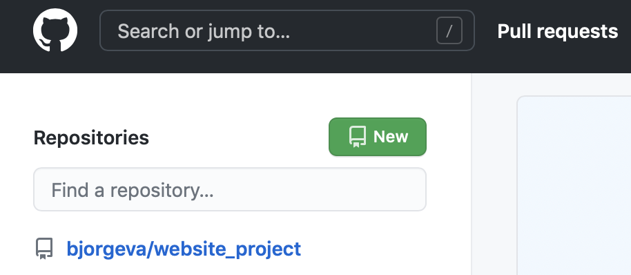
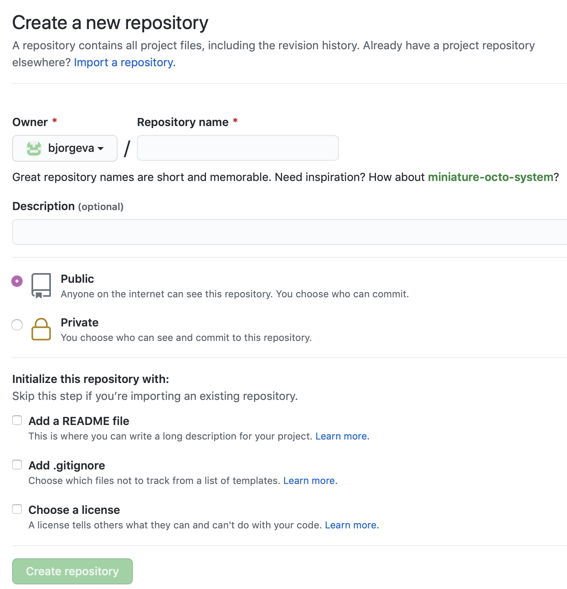
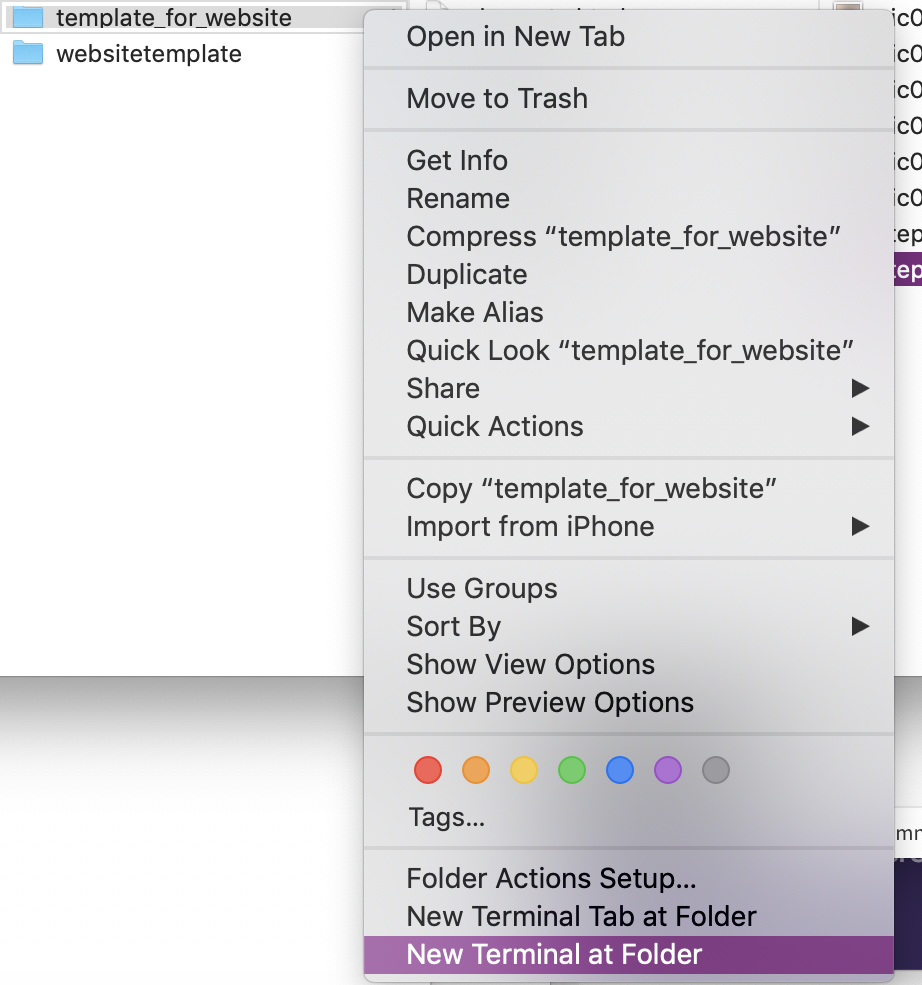
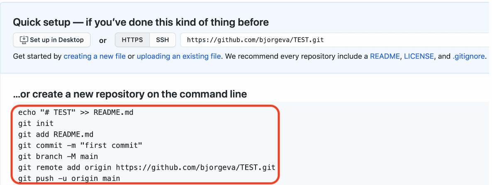
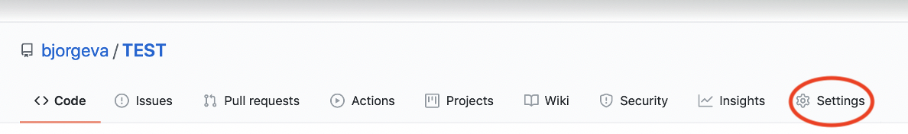
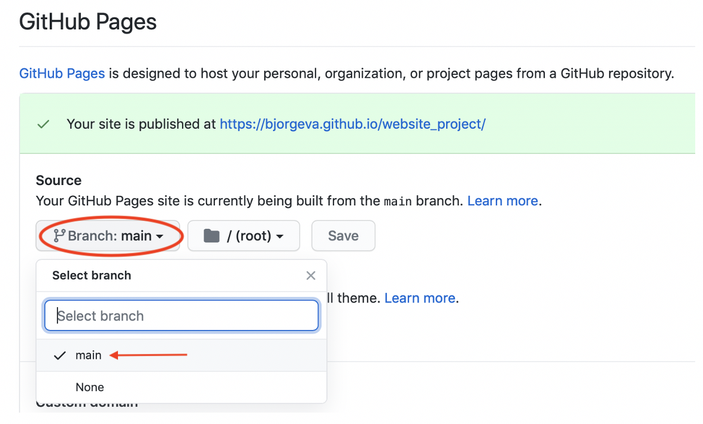
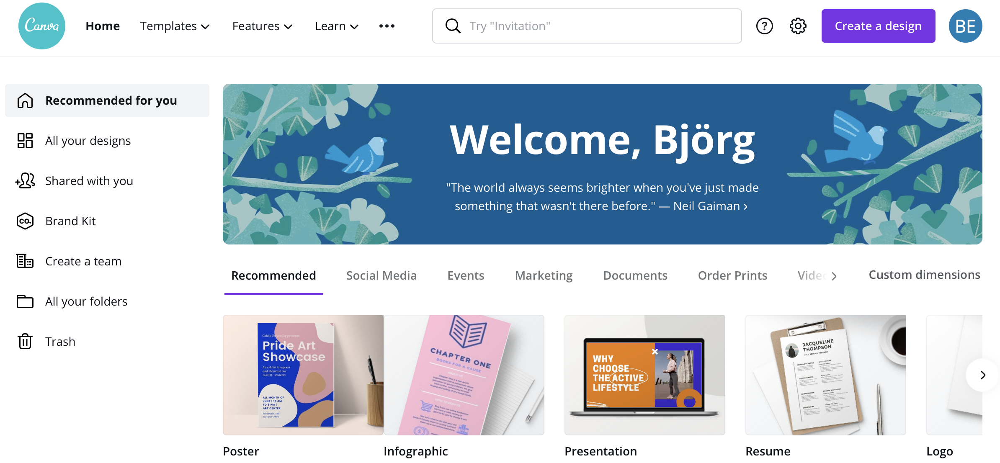

Making a website
Introduction
This website is made as a part of VÉL403G, a course at the University of Iceland, spring semester 2021. The course is tought by Hafliði Ásgeirsson. The purpose of the website is to keep track of all projects through the semester.
Gathering information
Before I started making the website (this one!) I watched the videos related to this first project of the semester.
As a guide for various parts of the project w3schools came in handy.
Search words used for further information gathering: html setup, logo, browser tab icon, CV.
The process of making and publishing the website
Prior to the making of this website I did not have experience in html. Thankfully we were allowed to build our website on a foundation of any of the website templates by html5up. I chose the one called Hyperspace. One of the files that comes with the template is called elements.html and there you can see a lot of helpful ways to make different text styles, buttons, links and so on.
To make the website my own, and edit the code for the website, I used Brackets. Other applications can be used for this purpose, but I chose to use Brackets because of the possibility of Live preview. Live preview allows you to see each change you make pop up as soon as you click save.
After I downloaded both the Hyperspace template and the Bracket application I set up git on my computer before moving on. To do so, click git and follow the instructions. I installed Homebrew, wich is one of the possibilities shown in the instructions, and then continued to install git. This was done with the following inputs in Terminal:
/bin/bash -c "$(curl -fsSL https://raw.githubusercontent.com/Homebrew/install/HEAD/install.sh)" After Homebrew is installed:
$ brew install git Before moving further with the website design with Brackets I logged in to my github account and made a new repository for storing and publishing my website. I had not done this before (and problems often come up when using Windows based instructions while working on a Mac) so I decided to try this part out first.
Here is a simple breakdown of the steps needed to make a repository, upload your files and publish the website:
- Step 0 (if you don‘t have a github account):
Visit github.com and click sign up, the website will lead you through the making of an account.
- Step 1:
In the repositories column on the left side of the homepage (after you log in) click New

- Step 2:
Fill in the required field Repository name with a name of your choice (the name you choose will be in the link of you website).

Be sure to choose Public, NOT Private. This will allow you to publish the website later on.
Finally click Create repository. - Step 3:
Go to the folder where the files for your website are stored on you computer.
MacOSX:
Right click the folder and choose New Terminal at Folder.
Windows: Right click and choose Open with Git Bash (or similar)
- Step 4:
In the github window that opened up after the reposityory was created, copy the circled text in the picture below.
- Step 5:
In the terminal window that opened up in step 3, paste the text from github and press enter. The files from the chosen folder should appear on github when you refresh the page from step 4.
Please be advised that this could take a few minutes and likely the README file will show up first.
- Step 6:
When all the files are visible in your new repository go to Settings.
- Step 7:
Scroll down to GitHub pages. Click the Branch drop down list and choose main, instead of None.
- Step 8:
Refresh the page and the green banner, wich might be blue at first, should be visible with the link to your published website!
- Step 9:
Click the link and check out your website!



Organizing the website
After I had successfully uploaded the template to my new GitHub repository I started writing down the description of the project process, as recommended in one of the guide videos linked above, and planning how my website should be organized.
I wanted the to make the website as user friendly as I could. Therefore I decided that everything that will be displayed on it for this course should be accessible with one click (and maybe a little scroll). Due to that decision the homepage will display all finished projects, and upcoming ones, so that they can be accessed from there. Scrolling further down I made a brief introduction to what can be found in my CV with an option to look at the full CV, if that is of interest.
When any of the projects, or the CV, has been clicked a menu bar appears at the top of the page so that the reader can click any of the other pages, and does not have to revisit the homepage before being able to access the next page of choice. Also, if any external links which I have included in my summary of this project are clicked, I wanted the webpages to open up in a new tab, so that the reader will not be forced to leave the website when they do so. Information to make that happen was found with w3schools, which I mentioned in the beginning of this summary. It is quite simple, adding target="_blank" at the end of the link function will do the trick, like so: ... href="https://html5up.net" target="_blank">
My next task was putting up this project page, adding links, images and buttons that catch a readers eye and make the page more interactive.
When setting up the CV page I started out with making a page similar to this project page but after a while I realized it wasn't as clean and professional as I wanted it to look. I came to the conclusion that using a graphic design platform called Canva would be the most efficient way to achive the desired results.

In the progress of making my CV more visually pleasing I updated it, made it more "straight-to-the-point", added some crucial information an removed some that was not as important, for example some more detailed information about my previous service jobs, as it is not essential regarding my current career path.
Final touches
As one of the final touches to the website I decided to make a little logo for the browser tab. As I did not find a way to do it on w3schools I searched Stack Overflow and found a thread regarding this, linked here. I then made a few logos and tried them out, two of those you can see below, and the one to the right is the logo that should be visible in the browser tab. How the logos turned out is shown below them, side by side, to demonstrates how much of a difference there was between the two and how well people would be able to read them.
To make the logo the right size and format I used a Favicon & App Icon Generator. and added the following code to the head of all of my pages:
Lastly I split up the text with headers for better readability. The elements page that comes with the template download came in handy for that, as well as styles, buttons and more. The elements page is well organized to show several clever ways to make the webpage look and function better. Here is a sample from the page:

Updating the website
When a change has been implemented pushing the change to the repository with git is the next step, so that the change is visible to others.In the terminal for the local repository the following is typed in:
$ git add .
Followed by:
$ git commit -m 'a describing word of the last change'
Where the
' ' is neccesary.
Next type:
$ git push
And your change should be uploaded in a few moments!
That concludes the main parts of this project's process. The resources we were given for the project were maybe not many but all of them were extremely useful in pointing us in the right direction. It shows that knowing where and how to look for information can get you far, even with little experience.